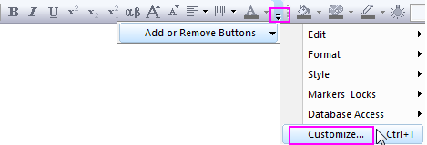
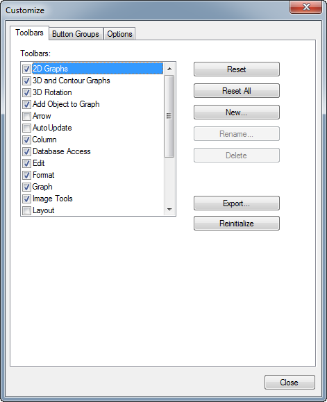
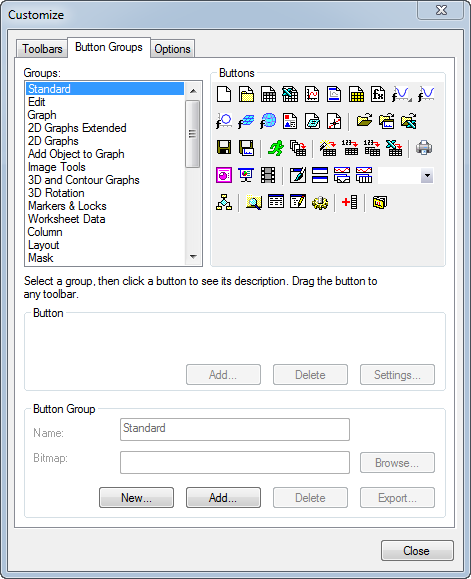
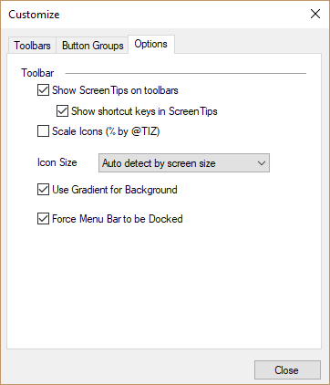

Der Dialog Symbolleisten anpassen
CustomToolbar-Dialog
Der Dialog Symbolleisten anpassen bietet die Steuerung über eine Benutzeroberfläche zu Origins Standardsymbolleisten und -schaltflächen.
Um den Dialog Anpassen zu öffnen, können Sie:
- Ansicht: Symbolleisten wählen oder Strg + T drücken.
oder
- Klicken Sie auf die Schaltfläche Schaltflächen hinzufügen oder entfernen（dem nach unten weisenden Pfeil am Ende jeder Symbolleiste）, um Anpassen in der Auswahlliste auszuwählen.
- 
Es gibt drei Registerkarte in dem Dialog:
Registerkarte Symbolleisten
Die Registerkarte Symbolleisten beinhaltet Bedienelemente zum:
- Ein- und Ausschalten bestimmter Symbolleisten
- Wiederherstellen der eingebauten Symbolleistenkonfigurationen
- Erstellen/Umbenennen oder Löschen benutzerdefinierter Symbolleisten
Dialogeinstellungen (siehe Abbildung)
- 
Das Listenfeld Symbolleisten
- Aktivieren oder deaktivieren Sie die Kontrollkästchen, um die Symbolleisten ein- oder auszuschalten.
Die Schaltfläche Zurücksetzen
- Stellt die Standardschaltflächengruppe für die ausgewählte Standardsymbolleiste wieder her.
Die Schaltfläche Alle zurücksetzen
- Stellt die Standardschaltflächengruppe für alle Standardsymbolleisten wieder her.
Die Schaltfläche Neu
- Öffnet den Dialog Symbolleistenname, der Sie auffordert, einen Namen für die benutzerdefinierte Symbolleiste einzugeben.
Die Schaltfläche Umbenennen
- Öffnet den Dialog Symbolleistenname, der Sie auffordert, einen Namen für die benutzerdefinierte Symbolleiste einzugeben. Diese Option steht für Standardsymbolleisten nicht zur Verfügung.
Die Schaltfläche Löschen
- Löscht die ausgewählte benutzerdefinierte Symbolleiste. Diese Option steht für Standardsymbolleisten nicht zur Verfügung.
Die Schaltfläche Exportieren
- Öffnet den Dialog Speichern unter, der Sie auffordert, einen Namen und einen Speicherort für Ihre Origin-Paketdatei (.opx) anzugeben, die die Informationen über alle Symbolleisteneinstellungen und Schaltflächengruppen enthält.
Die Schaltfläche Neu Initialisieren
- Setzt die Einstellungen aller Symbolleisten und andockbaren Fenster wieder auf die Standardkonfiguration der Installation zurück.
Die Registerkarte Schaltflächengruppen
Die Registerkarte Schaltflächengruppen beinhaltet Bedienelemente zum:
- Hinzufügen (oder Entfernen) von Schaltflächen in eine Symbolleiste
- Erstellen neuer Schaltflächengruppen (neue Symbolleisten)
- Verknüpfen einer Symbolleistenschaltfläche mit einer OGS-Datei (Skript)
Dialogeinstellungen (siehe Abbildung)
- 
Das Listenfeld Gruppen
- Listet alle standardmäßigen und benutzerdefinierten Schaltflächengruppen auf. Wählen Sie eine Gruppe aus, um die Teilschaltflächen zu sehen.
Die Gruppe Schaltflächen
- Listet alle Schaltflächen in der markierten Gruppe Schaltflächengruppe auf.
Die Gruppe Schaltfläche: Hinzufügen/Löschen/Einstellungen von Schaltflächen
- Fügen Sie Schaltflächen zu einer benutzerdefinierten Schaltflächengruppe hinzu oder entfernen Sie Schaltflächen aus dieser. Klicken Sie auf die Schaltfläche Einstellungen, um den Dialog Eigenschaften Schaltflächen zu öffnen.
Die Gruppe Kategorie
-
Das Textfeld Name
- Sie können den Namen der benutzerdefinierten Schaltflächenkategorie bearbeiten.
-
Das Feld Grafik
- Legen Sie ein Bild (.bmp-Format) für das Schaltflächensymbol fest. Sie können die Adresse direkt eingeben oder auf die Schaltfläche Durchsuchen klicken, um eine Datei auszuwählen.
-
Die Schaltfläche Neu
- Klicken Sie auf Neu, um den Dialog Kategorie erstellen zu öffnen, der Sie auffordert, eine benutzerdefinierte Kategorie von Schaltflächen zu definieren. Klicken Sie auf OK, um eine .ini-Datei für die Einstellungen dieser neuen Kategorie zu speichern.
-
Die Schaltfläche Hinzufügen
- Öffnet den Dialog Kategorie hinzufügen, der Sie auffordert, eine .ini-Datei für die Gruppe anzugeben.
-
Die Schaltfläche Löschen
- Löscht die Kategorie.
-
Die Schaltfläche Exportieren
- Öffnet den Dialog Kategorie exportieren, um eine Origin-Paketdatei für die ausgewählte Kategorie zu erstellen. Sie können auch weitere Dateien hinzufügen oder entfernen und die gemeinsame Nutzung in diesem Dialog zulassen.
Registerkarte Optionen
- 
QuickInfo auf Symbolleisten anzeigen
- Legt fest, wie die Bildschirmtipps gezeigt werden, wenn der Cursor über die Schaltflächen der Symbolleisten bewegt wird. Dieses Kontrollkästchen ist standardmäßig aktiviert.
Tastenkombinationen in QuickInfo anzeigen
- Legt fest, wie die Tastenkombinationen (falls vorhanden) auf den Bilrdschirmtipps gezeigt werden, wenn der Cursor über die Schaltflächen der Symbolleisten bewegt wird. Dieses Kontrollkästchen ist standardmäßig aktiviert.
Symbole skalieren (% nach @TIZ)
- Legen Sie fest, ob Symbole mit @TIZ% skaliert werden sollen. Der Standardwert für @TIZ ist 150. Sie können ihn ändern, um Symbole zwischen 50 % - 200 % zu ändern. Nützlich für Monitore mit hohem DPI.
Symbolgröße
-
Wählen Sie aus dieser Auswahlliste eine Symbolgröße aus:
- Autom. Erkennen durch Bildschirmgröße: Die Symbolgröße wird automatisch gemäß der Bildschirmauflösung neu skaliert. Der Standard verwendet Symbole mit 16 x 16 Pixel. Wenn Origin auf einem Monitor mit einer hohem Auflösung ausgeführt wird (die Bildschirmauflösung ist größer als 1080 in Richtung der Höhe, dann werden Pixelsymbole mit 32x32 Pixel verwendet.
- 16x16: Es werden immer Bitmaps mit 16x16 Pixel verwendet.
- 32x32: Es werden immer Bitmaps mit 32x32 Pixel verwendet.
- 16*16 skaliert durch Systemschrifteinstellungen: Die Symbolgröße wird mit den größeren Systemschrifteinstellungen neu skaliert. Der Standard verwendet Symbole mit 16 x 16 Pixel. Wenn Origin auf einem Monitor mit hoher Auflösung ausgeführt wird, das heißt, die Bildschirmauflösung ist größer als 1080 in Richtung der Höhe und die DPI sind größer als 125, dann wählen Sie diese Option, um die Symbolgröße zu vergrößern.
Einzelheiten finden Sie in dieser FAQ.
Gradient für Hintergrund verwenden
- Legt fest, ob der Gradient für den Hintergrund der Symbolleisten angezeigt wird. Dieses Kontrollkästchen ist standardmäßig aktiviert.
Menüleiste zum Andocken zwingen
- Diese Option verhindert, dass die Menüleiste aus dem Bereich der Menüsymbolleiste gezogen werden kann. Dieses Kontrollkästchen ist standardmäßig aktiviert.